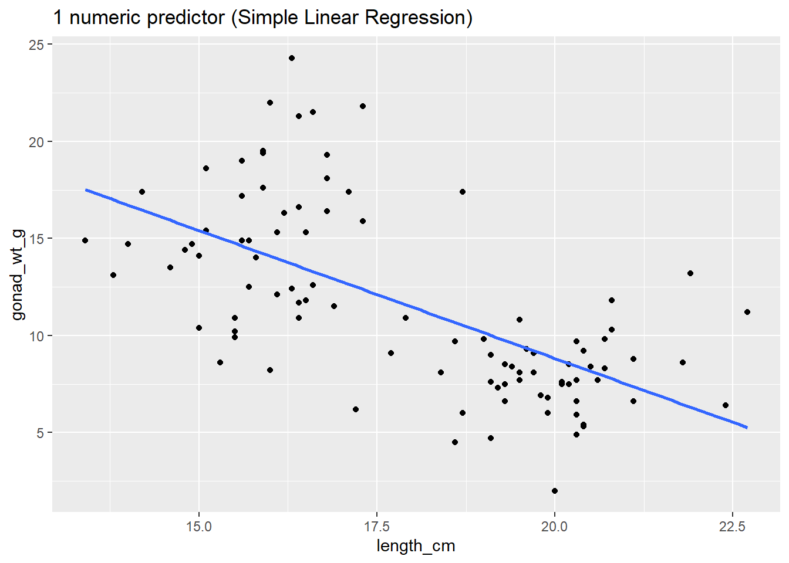

# load tidyverse
library(tidyverse)
# install.packages("tidymodels") #contains broom package
#if you have not before, uncomment line above and install tidymodels package (only need to do this once)
# load broom package (for linear model related functions)
library(broom)
# load skimr package - to use skim() function for descriptive statistics
library(skimr)BIO 5100 - Correlation & Regression Intro, Normal Distributions
Load Packages
Install tidymodels package (contains broom package) if you have not before.
The tidyverse package is actually a collection of multiple R packages https://www.tidyverse.org/packages/ including the ggplot2 package (for plotting) and dplyr package (for organizing and summarizing data). And you can load these (and others packages in the tidyverse) all at once using library(tidyverse).
The ggplot2 Package we will use primarily for making plots (and is part of the tidyverse) has great help pages: https://ggplot2.tidyverse.org/reference/index.html
The dplyr Package we will use for “data wrangling” (e.g., organizing, summarizing) and it also has (not as extensive) help pages https://dplyr.tidyverse.org/ (plus cheat sheets RStudio > Help > Cheatsheets)
NOTE: The broom Package is installed as part of tidymodels meta-package (similar to tidyverse). More information/examples of broom package functions can be found here: https://broom.tidymodels.org/articles/broom.html
- The broom package includes functions glance() (to look at statistics, like R2, from a linear model object) and augment() (to extract things like model residual values from a linear model object)
Read-in the data file
- Use the
read_csv()function to read the .csv data table file into RStudio - Assign to an R object named
dat_yt
dat_yt <- read_csv("YellowTangData_29_SEP_2016.csv")View (some of) the data
- use
glimpse()function to examine the structure of the data.frame nameddat_yt
glimpse(dat_yt)Rows: 100
Columns: 8
$ sex <chr> "M", "F", "F", "F", "F", "M", "F", "F", "M", "M", "M", "…
$ length_cm <dbl> 20.3, 16.0, 17.2, 17.1, 15.9, 20.5, 17.7, 15.1, 21.1, 19…
$ gonad_wt_g <dbl> 6.6, 22.0, 6.2, 17.4, 17.6, NA, 9.1, 15.4, 8.8, 7.6, 9.0…
$ home_range_m2 <dbl> 3.6, 24.5, 3.4, 19.8, 15.7, 5.1, 7.8, 2.1, 3.5, 1.7, 2.2…
$ gut_wt_g <dbl> 2.6, 0.6, 2.1, 0.7, 0.4, 0.7, 1.6, 2.7, 0.4, 2.2, 0.8, 0…
$ parasites <dbl> 8, 8, 7, 8, 8, 8, 8, 6, 8, 7, 6, 7, 6, 7, 6, 7, 7, 8, 7,…
$ location <dbl> 3, 1, 2, 4, 2, 2, 3, 1, 4, 1, 1, 2, 3, 4, 1, 3, 4, 2, 3,…
$ fishing_level <chr> "low", "high", "medium", "prohibited", "medium", "medium…The data type of each variable: https://tibble.tidyverse.org/articles/types.html (typically you’ll see: chr - character, dbl - double (number), or fct - factor (categorical variable)
Change the class of variable location
- R reads-in the location variable as dbl (i.e., numerical variable) by default since locations are numbered 1, 2, 3, 4
- Change
locationto a factor (i.e., a nominal categorical variable) so that it plots correctly
dat_yt <- dat_yt |>
mutate(location = as_factor(location))
# see the structure of the dat_yt table
glimpse(dat_yt)Rows: 100
Columns: 8
$ sex <chr> "M", "F", "F", "F", "F", "M", "F", "F", "M", "M", "M", "…
$ length_cm <dbl> 20.3, 16.0, 17.2, 17.1, 15.9, 20.5, 17.7, 15.1, 21.1, 19…
$ gonad_wt_g <dbl> 6.6, 22.0, 6.2, 17.4, 17.6, NA, 9.1, 15.4, 8.8, 7.6, 9.0…
$ home_range_m2 <dbl> 3.6, 24.5, 3.4, 19.8, 15.7, 5.1, 7.8, 2.1, 3.5, 1.7, 2.2…
$ gut_wt_g <dbl> 2.6, 0.6, 2.1, 0.7, 0.4, 0.7, 1.6, 2.7, 0.4, 2.2, 0.8, 0…
$ parasites <dbl> 8, 8, 7, 8, 8, 8, 8, 6, 8, 7, 6, 7, 6, 7, 6, 7, 7, 8, 7,…
$ location <fct> 3, 1, 2, 4, 2, 2, 3, 1, 4, 1, 1, 2, 3, 4, 1, 3, 4, 2, 3,…
$ fishing_level <chr> "low", "high", "medium", "prohibited", "medium", "medium…You can see in the glimpse() output that the variable location is now class fct (factor).
Scatter plots
Plotting two numeric variables, one of each axis.
Scatter plot of yellow tang length and gonad weight:
ggplot(dat_yt, aes(x = length_cm, y = gonad_wt_g)) +
geom_point() +
xlab("length (cm)") +
ylab("gonad weight (g)")
This appears to be a relatively weak, negative relationship.
Customizing Scatter plots
See the tidyverse reference page for geom_point() to see how to customize scatter plots:
<https://ggplot2.tidyverse.org/reference/geom_point.html>
There’s also additional options (like how to specify a certain point shape) here:
https://ggplot2.tidyverse.org/articles/ggplot2-specs.html
Change characteristics (size, color, shape) of ALL POINTS:
- Arguments in
geom_point()will apply to (change) all the points:
ggplot(dat_yt, aes(x = length_cm, y = gonad_wt_g)) +
geom_point(color = "dark green", size = 3, shape = 1) +
xlab("length (cm)") +
ylab("gonad weight (g)")Map a variable to color
- Arguments are put in
aes()when you want to map a categorical variable (sex) to some feature of the plot (color)
ggplot(dat_yt, aes(x = length_cm, y = gonad_wt_g, color = sex)) +
geom_point() +
xlab("length (cm)") +
ylab("gonad weight (g)")
geom_smooth() to add LOWESS moving average curve
https://ggplot2.tidyverse.org/reference/geom_smooth.html
geom_smooth()by default adds a moving average smoother line, also referred to as a LOWESS smoother curve (Locally Weighted Scatterplot Smoothing)we add the argument
se = FALSEso that confidence interval bands around smoother line do not plot, which is not necessary here.
# a smoother line (moving average) for all data
ggplot(dat_yt, aes(x = length_cm, y = gonad_wt_g)) +
geom_point() +
geom_smooth(se = FALSE) +
xlab("length (cm)") +
ylab("gonad weight (g)")Adjust the span argument
The
spanchanges the range of x values over which the the moving average is done.Similar to adjusting binwidths in a histogram, try values between
0.3and1.0forspanto see how it affects the smoother line and what patterns in the data it reveals.
# span = 0.3
ggplot(dat_yt, aes(x = length_cm, y = gonad_wt_g)) +
geom_point() +
geom_smooth(span = 0.3, se = FALSE) +
xlab("length (cm)") +
ylab("gonad weight (g)")
# span = 1
ggplot(dat_yt, aes(x = length_cm, y = gonad_wt_g)) +
geom_point() +
geom_smooth(span = 1, se = FALSE) +
xlab("length (cm)") +
ylab("gonad weight (g)")- if we add
color = sexto aes, it will plot a smoother line (moving average) for each sex
# add color = sex to aes
ggplot(dat_yt, aes(x = length_cm, y = gonad_wt_g, color = sex)) +
geom_point() +
geom_smooth(se = FALSE) +
xlab("length (cm)") +
ylab("gonad weight (g)")ggplot(dat_yt, aes(length_cm, gonad_wt_g, color = fishing_level)) +
geom_point() +
geom_smooth(se = FALSE)
Can see differences in the relationship between the sexes. However fishing_level does not appear to impact the relationship at all (all fishing levels have very similar smoother lines).
Correlation Coefficient r
cor() within summarize()
cor()is the original base R function to calculate a correlation coefficient.You can use
cor()work with the pipe operator and thesummarize()function, similar to calculating a mean, median, etc.Note: the cor() function has arguments for the x and y variables in the correlation
and if there are NAs in either variable you need to add the argument
use = "pairwise.complete.obs"so the result is not an NA (it will make R ignore any observations (fish in the this case) that has an NA (missing data) for either its length or gonad weight in the raw data.
# A tibble: 1 × 1
r
<dbl>
1 -0.634Here -0.63 indicates a moderately strong (strength) negative (direction) relationship between for the entire sample of Yellow Tang length and gonad weight as can be seen in the previous scatter plot.
Correlation Coefficient r for each level of a variable w/ group_by()
- Calculate the correlation coefficient each sex using the group_by function:
# A tibble: 2 × 2
sex r
<chr> <dbl>
1 F 0.104
2 M 0.192When we ran the correlation with all data (all fish in the sample) it was -0.63, but now for each sex individually it switches to very week positive relationships (0.19 for males and 0.10 for females).
corrr tidyverse package
https://www.tidyverse.org/blog/2020/12/corrr-0-4-3/
corrr is a package for exploring correlations in R, focused on creating and working with data frames of correlations that can be easily explored via corrr functions or by leveraging other functions in the tidyverse. It’s main value is if you want to run a lot of correlations between many different variables in a data.frame, so we won’t use it much/at all in our course. JUST HERE FOR DEMO, don’t need to install/use…
- (install if necessary, and) load the corrr package with the
library()function
-
correlate()is the function from the corrr package to produce correlation coefficients.
# A tibble: 2 × 3
term length_cm gonad_wt_g
<chr> <dbl> <dbl>
1 length_cm NA -0.634
2 gonad_wt_g -0.634 NA The output is similar to the one produced by the cor() function above if you just want to see the correlation coefficient for a pair of numerical variables.
However, the
correlate()output is a data.frame (i.e., a tidyverse “tibble”) instead of being a matrix, so there are some advantages. But the real benefits come if you want to run correlations between many pairs of variables and/or visualize those.See the tidyverse help page for the corrr package if you want to see more examples of what it can do: https://www.tidyverse.org/blog/2020/12/corrr-0-4-3/
- Here we select all numerical columns, and then calculate correlation between all pair-wise combinations of variables.
# A tibble: 5 × 6
term length_cm gonad_wt_g home_range_m2 gut_wt_g parasites
<chr> <dbl> <dbl> <dbl> <dbl> <dbl>
1 length_cm NA -0.634 0.0452 -0.0998 -0.0944
2 gonad_wt_g -0.634 NA -0.0356 0.119 0.0479
3 home_range_m2 0.0452 -0.0356 NA -0.0558 -0.294
4 gut_wt_g -0.0998 0.119 -0.0558 NA 0.0268
5 parasites -0.0944 0.0479 -0.294 0.0268 NA Guess the correlation coefficient:
https://psu-eberly.shinyapps.io/Correlation_Guessing/
It is good to be able to relatively precisely (maybe within 0.3) guess a correlation coefficient from looking at a plot of data.
(This Shiny App is something else built with R)
General Linear Models Overview
Examples to illustrate relationships to traditional inference methods we’ll be covering this semester
In all examples below we have 1 numerical response variable (gonad weight)
-
General Linear Models assess the influence of one or more predictor variables. Examples of these could be:
- one numerical predictor (Simple Linear Regression)
- one categorical predictor (ANOVA) (or t-test if only 2 levels of that variable)
- one numerical predictor + one categorical predictor (ANCOVA)
- And then many more complicated examples also possible
# one numerical predictor (Simple Linear Regression)
ggplot(dat_yt, aes(x = length_cm, y = gonad_wt_g)) +
geom_point() +
geom_smooth(method = lm, se = FALSE) +
ggtitle("1 numeric predictor (Simple Linear Regression)")
# one categorical predictor (ANOVA)
ggplot(dat_yt, aes(x = fishing_level, y = gonad_wt_g)) +
geom_point() +
stat_summary(fun = "mean", color = "blue", size = 10,
geom = "point", shape = "_") +
ggtitle("1 categorical predictor (ANOVA)")# one numerical predictor + one categorical predictor (ANCOVA)
ggplot(dat_yt, aes(x = length_cm, y = gonad_wt_g, color = fishing_level)) +
geom_point() +
geom_smooth(method = lm, se = FALSE) +
ggtitle("1 numeric * 1 categorical predictor (ANCOVA)")Simple Linear Regression
lm() is the linear model function that can be used fit all types of General Linear Models.
https://lindeloev.github.io/tests-as-linear/
Common statistical methods you are familiar with like Simple Linear Regression, ANOVA, ANCOVA, Multiple Regression are forms of general linear models (note this is different from Generalized Linear Models).
The traditional analysis methods are just based on the type of explanatory (predictor) variable(s) in the general linear model: Regression (numerical predictor), ANOVA (categorical predictor), or ANCOVA (numerical and categorical predictors)
Fitting a Linear Regression Model with lm()
does yellow tang length explain (predict) gonad weight?
Fit the linear model using the
lm()function-
define the model in lm() with a formula:
- response_variable ~ predictor_variable
- y ~ x
gonad_wt_g ~ length_cm- (in words: “gonad weight as a function of length”)
use the argument:
data = dat_ytto tell the function where the variables are storedstore result as a object named
lm_gonad_lengthThen run the lm object name to view the model coefficients (i.e, the “parameter estimates”)
#fit the regression line (linear model function lm), store result as a object named lm_gonad_length
lm_gonad_length <- lm(gonad_wt_g ~ length_cm, data = dat_yt)
#then run the lm object name to view the fitted model coefficients
lm_gonad_length
Call:
lm(formula = gonad_wt_g ~ length_cm, data = dat_yt)
Coefficients:
(Intercept) length_cm
35.175 -1.318 y-intercept = 35.2, and slope = -1.3
Slope interpretation (put in context of units of each variable): as length increases by 1 cm, gonad weight decreases by 1.3 g
Regression line equation (Y = b0 + b1X):
(gonad weight) = 35.2 - 1.3*(length)
Add the regression line to your plot w/ geom_smooth()
- use argument
method = lmingeom_smooth() - also include argument
se = FALSEto not plot confidence interval bands (not relevant here)
# add the regression line to your plot using argument
# method = lm in geom_smooth
ggplot(dat_yt, aes(length_cm, gonad_wt_g)) +
geom_point() +
geom_smooth(method = lm, se = FALSE)- the
coef()function extracts the coefficients from the linear model object
# display model coefficients
coef(lm_gonad_length)(Intercept) length_cm
35.174927 -1.317731 - Can also use base R selection code to extract each parameter
# extract the first coefficient (Intercept)
coef(lm_gonad_length)[[1]][1] 35.17493# extract the second coefficient (slope)
coef(lm_gonad_length)[[2]][1] -1.317731Assessing “model fit”
“Is a linear regression model appropriate for this data?”
R2 “Coefficient of Determination”
r2 (for simple linear regression) or R2 (all other model types)
- ranges from: 0 to 1.0 (0 to 100% of variation in Y explained by model)
- Measures only the STRENGTH of the linear relationship between two quantitative variables
- “How well do the points fit the line?”
- independent of direction of relationship (+/- slope doesn’t matter)
There are many ways to find/extract the r2 value (using glance is probably the preferred method):
#PREFERRED METHOD - using glance from broom package (in tidymodels)
# use/report Adjusted R-sqrd
glance(lm_gonad_length)# A tibble: 1 × 12
r.squared adj.r.squared sigma statistic p.value df logLik AIC BIC
<dbl> <dbl> <dbl> <dbl> <dbl> <dbl> <dbl> <dbl> <dbl>
1 0.402 0.395 3.69 64.4 2.50e-12 1 -266. 538. 546.
# ℹ 3 more variables: deviance <dbl>, df.residual <int>, nobs <int># can also extract r-squared value (coefficient of determination) from the model
# with base R summary function
summary(lm_gonad_length)
Call:
lm(formula = gonad_wt_g ~ length_cm, data = dat_yt)
Residuals:
Min 1Q Median 3Q Max
-6.8203 -2.3654 -0.8058 1.9021 10.6041
Coefficients:
Estimate Std. Error t value Pr(>|t|)
(Intercept) 35.1749 2.9755 11.822 < 2e-16 ***
length_cm -1.3177 0.1642 -8.026 2.5e-12 ***
---
Signif. codes: 0 '***' 0.001 '**' 0.01 '*' 0.05 '.' 0.1 ' ' 1
Residual standard error: 3.693 on 96 degrees of freedom
(2 observations deleted due to missingness)
Multiple R-squared: 0.4015, Adjusted R-squared: 0.3953
F-statistic: 64.41 on 1 and 96 DF, p-value: 2.505e-12# use Adjusted R-sqrdNote that the Adjusted R-squared is an attempt to account for the phenomenon of the R2 automatically and spuriously increasing when extra explanatory variables are added to the model (from <https://en.wikipedia.org/wiki/Coefficient_of_determination>). This is often what is actually reported in papers as the R2 value (and they don’t note that it is the “adjusted” value). It is always going to be a little lower than the “regular” or “Multiple” R2 value, so it is the more conservative statistic to report.
Compare a smoother curve to the linear regression line
dat_yt |>
ggplot(aes(x = length_cm, y = gonad_wt_g)) +
geom_point() +
geom_smooth(se = F, span = 0.5, color = "purple") +
geom_smooth(se = F, method = lm, color = "gold")In many places most of the data is either below or above the (gold) regression line, and the purple smoother (moving average LOESS line) tracks the data and shows this “lack of fit” to the linear regression model.
Model Residuals (examining them)
Model residuals are the difference (in the Y or vertical direction) between the observed y values (the data) and the predicted y values (the regression line).
We can use the
augment()function (from broom package) to extract information from the model about each point in our data setWe can save those as a data.frame named
lm_gonad_length_augment
## use augment() function (from broom package, loaded in tidymodels) to extract information from the model
# about each point in our data set
lm_gonad_length_augment <- augment(lm_gonad_length)
#
lm_gonad_length_augment# A tibble: 98 × 9
.rownames gonad_wt_g length_cm .fitted .resid .hat .sigma .cooksd
<chr> <dbl> <dbl> <dbl> <dbl> <dbl> <dbl> <dbl>
1 1 6.6 20.3 8.42 -1.82 0.0208 3.71 0.00265
2 2 22 16 14.1 7.91 0.0179 3.62 0.0427
3 3 6.2 17.2 12.5 -6.31 0.0114 3.66 0.0170
4 4 17.4 17.1 12.6 4.76 0.0117 3.68 0.00997
5 5 17.6 15.9 14.2 3.38 0.0188 3.70 0.00814
6 7 9.1 17.7 11.9 -2.75 0.0104 3.70 0.00293
7 8 15.4 15.1 15.3 0.123 0.0266 3.71 0.0000155
8 9 8.8 21.1 7.37 1.43 0.0294 3.71 0.00234
9 10 7.6 19.1 10.0 -2.41 0.0127 3.70 0.00276
10 11 9 19.1 10.0 -1.01 0.0127 3.71 0.000483
# ℹ 88 more rows
# ℹ 1 more variable: .std.resid <dbl>The
.fittedcolumn are the predicted y values (along the regression line) for each point (length value)The
.residcolumn are the residuals (in this example: gonad_wt_g - .fitted)
“Fancy” Residuals plot (for demo purposes)
We can make a fancy plot visualizing the residuals (larger residuals have larger points and more red color). Adapted code from https://drsimonj.svbtle.com/visualising-residuals
lm_gonad_length_augment |>
ggplot(aes(x = length_cm, y = gonad_wt_g)) +
geom_smooth(method = lm, se = FALSE, color = "lightgrey") +
geom_segment(aes(xend = length_cm, yend = .fitted), alpha = .2) +
# point color AND size mapped to residual size
geom_point(aes(color = abs(.resid), size = abs(.resid))) +
scale_color_continuous(low = "black", high = "red") +
# color and size legend also removed
guides(color = "none", size = "none") +
geom_point(aes(y = .fitted), shape = 1) +
theme_bw()Histogram of model residuals
This is a standard plot you should make to assess “model fit”
If the model fits well, residuals should be relatively normally distributed (e.g., symmetrical, no big outliers or multi-modality)
## Plot a histogram of the model residuals,
ggplot(lm_gonad_length_augment, aes(x = .resid)) +
geom_histogram()In this example the distribtion of the residuals is somewhat skewed with a positive tail, although that by itself would not be too worrisome (need to look at the other plots as well), but could mean a signle regression line is not the best way to model the relationship…
Residuals vs Predictor Plot
This is another standard plot you should make to assess “model fit”
Scatterplot of the model residuals vs. the predictor (x) values from your model
If the model fits well, there should be no clear patterns in this plot (should look like just a random scatter of points)
You can add a smoother (moving average line) to this plot as another way to assess if there is pattern in residuals (if not pattern it should be more or less a flat horizontal line)
## Scatterplot of the model residuals vs. the predictor (x) values
ggplot(lm_gonad_length_augment, aes(x = length_cm, y = .resid)) +
geom_point() +
geom_smooth(se = F)In this example there is CLEARLY a pattern to the residuals, indicating the linear regression line does NOT fit the data well. If there was no pattern in the residuals the blue line would be closer to a flat/horizontal line.
High Leverage/Influence Points
Visually check your plot of the data for individual points that have high leverage and may be highly influential.
i.e., look for outliers that also have “high leverage” meaning they are extreme in terms of their X (predictor) values
If a high leverage point, also has a large residual, it is highly influential. (i.e., quantified as “cooks distance”.)
For the upcoming assignment, just note if there are any points you think might be like this. Later in the semester we’ll discuss other ways to better assess/address the influence of these points on your model.
For more info on Outliers, Leverage Points and Influential Points see: https://www2.stat.duke.edu/courses/Spring19/sta101.002/post/project/outliers.html
Just for demo purposes… (this goes beyond the scope of the next assignment, here we’ll bring in another explanatory (categorical) variable to our linear model).
How do residual plots look in a better fitting model?
Primary thing I want you to notice is the two residual examination plots below. Check out the:
- Histogram of Residuals (now much more Normal compared to the one above without the sex in the model)
- Scatter plot of residual vs. predictor values (now no pattern in points, and smoother goes more or less flat/horizontally across the plot)
- These both indicate that this model fits the data much better than our previous model.
# Let's add variable sex to our model and see how that changes the residuals
ggplot(dat_yt, aes(length_cm, gonad_wt_g, color = sex)) +
geom_point() +
geom_smooth(method = lm, se = FALSE) +
ggtitle("1 Numerical and 1 Categorical Predictor Variable (ANCOVA)")#fit the regression line (linear model function lm), store result as a object named lm_gonad_length
lm_gonad_length_by_sex <- lm(gonad_wt_g ~ length_cm*sex, data = dat_yt)
# diplay linear model results
lm_gonad_length_by_sex
Call:
lm(formula = gonad_wt_g ~ length_cm * sex, data = dat_yt)
Coefficients:
(Intercept) length_cm sexM length_cm:sexM
8.516886 0.407111 -8.618333 -0.004471 # use augment function to extract residuals of our new model
lm_gonad_length_by_sex_augment <- augment(lm_gonad_length_by_sex)
# histogram of residuals
ggplot(lm_gonad_length_by_sex_augment, aes(x = .resid)) +
geom_histogram() +
ggtitle("histogram of residuals")# residuals vs. predictor (x-values) plot
ggplot(lm_gonad_length_by_sex_augment, aes(x = length_cm, y = .resid)) +
geom_point() +
geom_smooth(se = F) +
ggtitle("residuals vs. predictor (x-values) scatter plot")The plots above all indicate that this model (now including sex variable) fits the data much better than our previous model (without the sex variable).
Making Predictions with your linear model line equation
Calculate the predicted gonad weight for length of 20 cm using the linear model
# Y = b0 + b1*X
# predicted Y = y-intercept + slope * x-value
# type in y-intercept and slope values
35.174 + (-1.318 * 20)[1] 8.814# You could also use the coef() function to extract the intercept and slope within the line equation
coef(lm_gonad_length)[[1]] + coef(lm_gonad_length)[[2]]*20[1] 8.820298Can also use the predict() function to predict y values for a given x
#create a data.frame with the length you want a prediction of gonad weight for
new_data <- data.frame(length_cm = 20)
# use predict function and your linear model
predict(lm_gonad_length, newdata = new_data) 1
8.820298 Visualize a prediction by adding lines to the plot
To visualize the prediction, add a vertical line to your plot with
geom_vline()at length = 20 cmAnd a horizontal line to your plot with
geom_hline()at the predicted gonad weight value
ggplot(dat_yt, aes(length_cm, gonad_wt_g)) +
geom_point() +
geom_smooth(method = lm, se = FALSE) +
# add a vertical line at length = 20 cm
geom_vline(xintercept = 20, color = "green") +
# add a horizontal line at the predicted gonad weight value
geom_hline(yintercept = 8.8, color = "brown")Linear Transformations
ADDITIONAL TOPIC (not needed for next Assignment)
Changing the units of a variable is called a “linear transformation”, and this will not change the distribution of a variable.
Create a new column on dat_yt called called length_in converting yellow tang length from cm to inches (divide cm by 2.54)
See the dplyr cheatsheet (Help > Cheatsheets) if you can’t remember the function to add columns to a data.frame
dat_yt <- dat_yt |>
mutate(length_in = length_cm/2.54)
# Note: ctrl+shift+m or cmd+shift+m (Mac) will insert the pipe operator: |>
# Select the two columns (including the new length_in we just created) and then use head() function to show first 6 rows of data
dat_yt |>
select(length_cm, length_in) |>
head()# A tibble: 6 × 2
length_cm length_in
<dbl> <dbl>
1 20.3 7.99
2 16 6.30
3 17.2 6.77
4 17.1 6.73
5 15.9 6.26
6 20.5 8.07Can see in their histograms the distributions of length in cm and inches are still the same.
ggplot(dat_yt, aes(x = length_cm)) +
geom_histogram() +
xlab("Length (cm)")ggplot(dat_yt, aes(x = length_in)) +
geom_histogram()+
xlab("Length (in)")Scatter plot of yellow tang length in cm and inches.
ggplot(dat_yt, aes(x = length_cm, y = length_in)) +
geom_point()This shows why this is called a “linear transformation.” The scales (units on x and y axes) change but nothing else does when you multiple or divide a variable by a constant.
Normal distributions (demo plots)
Just for demo purposes (you’ll probably never need or want to create plots like this unless you are teaching statistics).
How many “Normal” distributions are there?
- There are an infinite number of Normal distributions defined by their mean and sd
- Change the mean to slide the distribution left or right
- Change the sd to change spread in the distribution
#the args argument specifies the mean, sd of each Probability Density Function (curve)
ggplot(data.frame(values = c(-100, 100)), aes(x = values)) +
ylab("probablity density") +
stat_function(fun = dnorm, args = list(-40, 20), color = "black", linewidth = 2) +
stat_function(fun = dnorm, args = list(0, 20), color = "purple", linewidth = 2) +
stat_function(fun = dnorm, args = list(40, 20), color = "gold", linewidth = 2) +
ggtitle("changing mean")
#the args argument specifies the mean, sd of each Probability Density Function (curve)
ggplot(data.frame(values = c(-100, 100)), aes(x = values)) +
ylab("probablity density") +
stat_function(fun = dnorm, args = list(0, 10), color = "black", linewidth = 2) +
stat_function(fun = dnorm, args = list(0, 20), color = "purple", linewidth = 2) +
stat_function(fun = dnorm, args = list(0, 30), color = "gold", linewidth = 2) +
ggtitle("changing sd")Standard Normal Distribution
The “Standard Normal Distribution” is a special case of a Normal distribution when mean = 0 and sd = 1
ggplot(data.frame(values = c(-5, 5)), aes(x = values)) +
stat_function(fun = dnorm, args = list(0, 1)) +
ylab("probablity density") +
scale_x_continuous(breaks = -5:5) +
geom_hline(yintercept = 0) +
# make y-axis plot start at 0
scale_y_continuous(expand = c(0, 0)) +
ggtitle("Standard Normal Distribution") +
theme_classic() +
geom_vline(xintercept = c(-1,1), color = "gold",
linetype = "dashed") +
geom_vline(xintercept = c(-2,2), color = "purple",
linetype = "dashed") +
geom_vline(xintercept = c(-3,3), color = "gray",
linetype = "dashed") +
# illistrate the 68 - 95 - 99.7% rule
annotate(geom="text", x=0, y=0.1, label="68%", color="gold",
size = 7) +
annotate(geom="text", x=0, y=0.2, label="95%", color="purple",
size = 7) +
annotate(geom="text", x=0, y=0.3, label="99.7%", color="gray",
size = 7) +
geom_segment(x = -0.9, y =0.08, xend = 0.9, yend = 0.08,
colour = "gold") +
geom_segment(x = -1.9, y =0.18, xend = 1.9, yend = 0.18,
colour = "purple") +
geom_segment(x = -2.9, y =0.28, xend = 2.9, yend = 0.28,
colour = "gray")Normal vs. t distributions
The t distribution is another symmetric bell-shaped density curve that is slightly different from the Normal distribution
ggplot(data.frame(values = c(-4, 4)), aes(x = values)) +
ylab("probablity density") +
stat_function(fun = dnorm, args = list(0, 1),
color = "gold", size = 1) +
stat_function(fun = dt, args = list(df = 8),
color = "purple", size = 1) +
ggtitle("Normal (gold) vs. t distribution (purple)")The smaller the sample size (8 in this example) the “fatter the tails” become on the t-distribution meaning there is a higher probability you could get a more extreme value, and thus the t-distribution provides a more conservative approach when sample sizes are small.